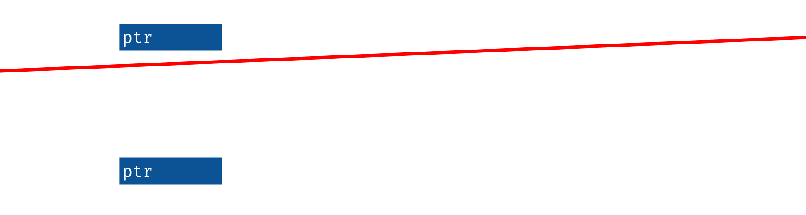

struct Vec<T> { ptr: *mut T, // pointer to allocation, with space for cap: usize, // values of type `T`, and the first len: usize, // instances are valid }

Huon Wilson, 2019-08-02
70% of security vulnerabilities in Microsoft products were due to the difficulty humans have writing safe C and C++ code. Rust is a low-level programming language in the same vein that helps the computer help us write safe code.
I'm Huon, a software engineer on the platform team of the IA or stellargraph project, and I've got some experience with Rust, so I'm going to try to help you take some early steps with it.
How are we going to get there? There'll be 3 sets of exercises: first Rust's approach to resource management, then looking at borrowing, how we can work with resources without also having to manage them.
TODO
Before going forward more, let's get things set up, so that can happen in parallel and everyone is ready when we get to the first exercise soon.
TODO: fill out repo name
$ git clone https://github.com/huonw/...
$ cd ...
$ cargo --version
cargo 1.36.0 (c4fcfb725 2019-05-15)
$ cargo run
...
Hello world
(These slides in slides/)
MSRC seems to be a formal team designed to deal with security vulnerabilities in Microsoft products, both retroactively and proactively. They performed an analysis of Microsoft's CVEs, and found, consistently, 70% of them were caused by memory safety problems.
Memory safety is a crucial building block for any other form of correctness, and violations can result in, at bestm a segfault, or at worst memory corruption and security vulnerabilities.
For low-level and high-performance programming, C and C++ are typical choices, and are likely the source of most of those vulnerabilities.
It's very difficult to write safe C and C++ at any scale. This is despite a plethora of tools now available, such as fuzzers and static analysers, and is true even with the at a mega-corporation like Microsoft, that now has consistent and strong investments in software correctness and safety, such as Haskell and the Midori operating system.
Rust is designed to be able to solve the same problems as C and C++, but with memory safety by default, and thus reducing the risk of the majority of those bugs.
Rust has a lot of good parts, and here's a quick summary of some words it uses to describe itself.
It has memory safety, and, uniquely, it does this without a garbage collector, which is how it targets the same problems as C and C++, so-called "systems programming". It does this through "affine typing", and also uses this to get some measure of thread safety.
A language empowering everyone to build reliable and efficient software. — rust-lang.org
Plus, it has a pile of nice things that are common in modern languages, static types with type inference and algebraic data types, pattern matching, and generics. It also has hygenic macros, easy-to-use tooling, and good platform support, including Windows.
All in all, can feel a bit like a blend of C or C++, and Haskell or OCaml: a low-level language with high-level conveniences.
A language empowering everyone to build reliable and efficient software. — rust-lang.org
I'm going to try to make this as practical as possible. The goal is to write a little command-line program that will take in a simple CSV file of numbers, and summarise the columns.
It might look something like this, where the file has two columns, with headings "year" and "data", and three rows of data. A summarisation program could tell us the min, mean and max for each of them.
example.csv:
year,data
2019,61
2020,62
2021,9999
Your program (maybe):
$ cargo run --bin summarise-csv -- example.csv year: min = 2019, mean = 2020, max = 2021 data: min = 61, mean = 3374, max = 9999
TODO
TODO
Resources can be anything: a file, a socket connection to another host or a user session. In any programming language, there's a lifecycle that looks basically the same: the resource is created, and then used for a while, and then closed. Easy, right?
Lifecycle:
For a file, it might look something like this, in pseudocode: we open it, and then we do some reads, and then we close it, to clean up the booking keeping the operating system is keeping.
// create the resource file = open("example.csv") // use it read(file) read(file) // clean up after it close(file)
This is easy when written out like this, but easy to get wrong, because the explicit close step is required. There's three broad classes of how to get resource management wrong, and they all relate to that close or clean-up.
One can forget to do the clean up entirely.
One can try to use the resource after cleaning it up.
And, in a similar vein, one can clean it up twice.
All of these are really obvious with these snippets, but are much harder in real code. In particular, resources might be stored by other objects, and so it isn't clear who owns the resource, as in, who has responsibility to clean-up, and even if it is clear, it can be hard to ensure that no-one is still using the resource when the owner closes it.
Having to clean up makes life hard
file = open("example.csv") read(file) // no clean-up
file = open("example.csv") close(file) // use after clean-up read(file)
file = open("example.csv") close(file) // double clean-up close(file)
Let's jump sideways for a second: how to understand the basics of reading Rust. You don't have to remember this precisely, we'll practice later.
A function is defined with the fn keyword, in a declaration similar
to a variety of languages these days. There is type inference, but not
for arguments, and they must have the type specified after a
colon. The return value is after the arrow. The types I've specified
here are 32-bit signed integers, the i. Numeric types all follow this
pattern, e.g. u instead of i for unsigned, and f for floating point.
Rust inherits a variety of things from its functional roots, one of
which is many things being expressions. A function takes the value of
the last expression in its body, although you can also use the
return keyword.
fn add(x: i32, y: i32) -> i32 { x + y }
fn = function<name> : <type>-> <type>i (signed), u (unsigned) followed by size in bitsNext, let's do something useful with that function we just defined.
We've got a main function here, which is where Rust programs
start. It takes no arguments, and returns nothing, aka the empty
tuple, unit in modern languages, or void in C. Not marking a return
type is the same as explicitly writing an arrow to that empty tuple
type.
Variables or name bindings are declared with let. A type can be
specified after a colon after the name, similar to an argument, but
it's optional, so I've left off the : i32.
The line ends with a semicolon, because statements in Rust are always separated with semicolons.
Next we'll print this value. The println call looks very excited, the
! indicates a macro call, which executes logic and rewrites that
code at compile time. In this case, it parses the first argument as a
format string, and ensures that it matches with the remaining
arguments. We're formatting just one thing here, so there's one {}
placeholder, and just the result argument. Similar to Python, and
unlike C, the right way to format a value can be automatically
deduced.
fn main() { let result = add(1, 2); println!("1 + 2 = {}", result); }
-> ()let defines variables/name bindings! = "macro": println does work at compile time to be
type-safe{} placeholder for value to be formatted; needed to separate statementsRust uses scoped-based resource management, aka RAII in C++. Variables and the values they hold are tied tightly to the scope in which they're defined, such as the body of a function.
For this example, we've got a main function that opens our file, and reads from it. And, then, as execution leaves the scope at the end of the function, meaning return to the caller, the file resource is automatically closed. The type has a drop function, aka a destructor or finalizer. that is automatically called on its values when they go out of scope.
This ensures the resource is always closed, except in some rather technical edge cases that don't apply to local variables like this. It also means that there's no chance of closing twice, or reading after closing, because there variable is not at all accessible.
use std::fs::File; fn main() { let file = File::open("example.csv").unwrap(); file.read(...).unwrap(); } // automatically closed at end of scope ~(implicit `drop(file)`)
(unwrap = error "handling'.)
That looks great for the simple example, but what happens when we actually want to do things with resources, like pass them around and build abstractions for them.
In this example, we have a function that opens the file, assigns it to a local variable, and then returns that variable.
Then, main calls that function, capturing the returned file into, and
passes it off to this takes_file function, that maybe does something
useful with it.
When this program runs, how many File resources are created? And, how many times is the destructor for File called?
How many resources, how many destructor calls, and where?
use std::fs::File; fn open_file() -> File { let file1 = File::open("example.csv").unwrap(); file1 } fn main() { let file2 = open_file(); takes_file(file2); } fn takes_file(file3: File) { file3.read(...).unwrap(); }
The answer to both is 1: there's only one file resource created, and so the destructor is only called once. The trick here, that differs from C++, is that resources are tied to values, and these values can be easily moved around from place to place.
open_file has a local variable containing a File type, but it is
moved into the caller as the return value. The compiler knows file1
no longer contains a valid File resource, and so doesn't need to, and
shouldn't run the destructor.
A similar thing happens in main, where the file2 value is filled
in with a File resource from the open_file call. This resource is
then passed into takes_file, which takes complete control, and thus
file2 no longer owns the file value and so doesn't clean it
up. Finally, the file3 variable in takes_file does still owns the
File resource by the end of the function, and so does need to close
it. The one and only destructor call in this program.
Resources are values, not bindings.
use std::fs::File; fn open_file() -> File { let file1 = File::open("example.csv").unwrap(); file1 } // not closed, moved as return value fn main() { let file2 = open_file(); takes_file(file2); } // not closed, moved into `takes_file` fn takes_file(file3: File) { file3.read(...).unwrap(); } // automatically closed at end of scope
That's probably a lot to take in, so let's get our hands dirty.
I've set three exercises in the src/bin/resource-management.rs
file. The first is exploratory, and the second has a goal, and the
third is a bit of an extension. The solution isn't exactly in the
stuff I've told you, but you may be able to guess.
Open
src/bin/resource-management.rs
Run using cargo run --bin resource-management.
The second exercise involved stringing together the three parts of opening the file, reading it and printing the result. One way to do it is the version on the screen here. The output is below. Why does it say it's closing the file before printing the headings?
There's solutions for the other two in the examples directory, but let's talk about the extension.
Part 2:
// Rust binaries start at the `main` function. fn main() { let file_name = "data/example.csv"; let file = open_file(file_name); let headings = read_line(file); println!("headings: {}", headings); }
*** closing file now *** headings: year,data
All solutions at examples/resource-management-....rs (cargo run --example resource-management-...).
The third involved trying to call read_line twice. Something like this.
The read_line function moves or consumes its File resource
argument, and so has complete control over what happens to it. This
sometimes gets called unique ownership: there's a single unique owner
of the file value.
As we saw before the exercise, this means that when the file value
moves into read_line, the main function has no control over
it. The clean up can, and does, run before we get back out to main
again, and so we have a use-after-close bug if we could read from the
file again.
What happens when we try?
fn main() { let file = open_file("data/example.csv"); let headings = read_line(file); // A let data_line = read_line(file); // B } fn open_file(name: &str) -> File { ... } fn read_line(mut file: File) -> String { ... } // C
It's a compile error. In exactly the same way that the compiler knows whether a value needs to be cleaned up, by statically tracking the moves, it knows whether we can use the value.
The compiler is giving an error on line B, saying that we're trying to use the value that was moved on line A.
This seems suboptimal. It would be really nice to be able to use things more than once.
Any ideas for how we have control of the file resource to read again?
fn main() { let file = open_file("data/example.csv"); let headings = read_line(file); // A // ---- value moved here let data_line = read_line(file); // B: ERROR: use of moved value // ^^^^ value used here after move } fn open_file(name: &str) -> File { ... } fn read_line(mut file: File) -> String { ... } // C
One way would be to just return it. I've changed read_line to return
a tuple or pair of values, the original string and also the input file
value. This is communicating the flow of the resources directly:
read_line takes control of the file and can do anything with it, and
then returns control for the caller to continue doing what they want.
This works, we can read the first line, and use the file return value to read the second. Nice and functional.
But, it's a bit clunky, and pays a bit of cost, because we end up
having to move the File value around in memory.
fn main() { let file = open_file("data/example.csv"); let (headings, file2) = read_line(file); // A let (data_line, _) = read_line(file2); // B } fn open_file(name: &str) -> File { ... } fn read_line(mut file: File) -> (String, File) { ... } // C
This brings us to our next section.
TODO
&mut: mutation XOR sharingThe language has a mutable or unique reference. This is a nicer version of take and return pattern we just saw, and is a pointer that temporarily has control of a resource or value without having to do the dance.
Just like if we were passing around the value directly, only one of these references is useable at a time, and so a function that receives one gets a lot of freedom to do what it wishes, including arbitrary mutations. This is safe and highly controlled, because of the uniqueness: no-one else can possibly be referring to the same object at that instance, so no-one else can observe any changes or inconsistencies.
This is sometimes described as mutation XOR sharing: almost all the
problems with mutation come around because the object being changed is
shared, and so others can observe, or be broken by, the changes. The
&mut reference type cannot have any sharing and so can be mutated
freely.
We can change our read_file function back to be more similar to what
it was before, with just returning a String, by taking a unique
reference to our File type.
fn main() { let mut file = open_file("data/example.csv"); let headings = read_line(&mut file); // A let data_line = read_line(&mut file); // B } fn open_file(name: &str) -> File { ... } fn read_line(file: &mut File) -> String { ... } // C
&mutI came across this quote recently.
The "take and return" pattern is really common in functinoal programming, representing an "update" to a structure, usually by creating a new one that might share some internals with a previous one.
Rust understands this pattern so deeply that it can be used to have true mutations, of modifying an exact location in memory, without almost all of the risks that come with uncontrolled mutation.
This pattern aloows building persistent data structures where the interface looks and behaves exactly like a mutation data structure, with structure only shared when the datastructure is explicitly duplicated.
pure functional programming is an ingenious trick to show you can code without mutation, but Rust is an even cleverer trick to show you can just have mutation. — Notes on a Smaller Rust @withoutboats
See also: In Rust, ordinary vectors are values, for mutable interfaces to persistent data structures.
Why does Rust care so much about resources? With resources like files and sockets, it is safe to just detect the use-after-close problem at runtime. A program that does it is incorrect, but it can easily be made to crash/exit in a controlled manner, so that the issue is obvious, and cannot escalate to a security problem.
However this isn't always so easy for all types of resource. Memory is also a resource, and it's dangerous.
In C, you might recall memory is managed via manual calls to malloc
to dynamically allocate a new chunk of memory and free to clean it
up, and mark that memory as not used. Here I've created a string of
1024 bytes, use it for a bit, and then free it. It looks like I've
been reasonably sensible and done it correctly, where all of the uses
are strictly between the create and clean-up.
However, if I got it wrong, or if do_x or do_y did something a bit
fancy, I would have problems. If I forgot to call free, I'd have a
memory leak, annoying but not too bad. If I used the pointer after
freeing, I'd have a problem that could lead to memory corruption and
security vulnerabilities. And, the same if I called free twice.
This is hard to get right in a complicated program.
// create char *pointer = malloc(1024); // use do_x(pointer); do_y(pointer); // clean-up free(pointer);
Same problems:
We've seen consistently that having to clean up our resources can lead
to problem, so garbage collection or GCs remove the need to clean up
memory. This works great: without needing to call free, there's no
way to call it wrong. If a piece of memory is still accessible and so
may be used in future, it won't be cleaned up, so no use-after-free,
and, the GC itself is carefully implemented to only free things once
no double-free!
GCs have, and still do, serve as a great tool for avoiding the worst memory corruption vulnerabilities. However, they only solve a subset of memory leaks, and they don't help much with other types of resource management.
Clean-up happens ✨magically✨
// create Something obj = new Something; // use obj.do_x() obj.do_y() // stop using, and clean-up/free will eventually happen
How does Rust handle it?
The String type is a memory resource. It's a sequence of bytes allocated on the heap. It gets created, and then we can do some processing on it, and then it gets freed, or cleaned-up, at the end of its scope.
Exactly the same as the file resource:
fn split_headers() { let line: String = "year,data".to_string(); line.split(',')... } // end of scope, `line` is freed
Stepping sideways slightly, let's talk about three common collection
types. The first one is Vec, meaning vector, which is a growable
vector or array of some type T. The angle brackets are the generic
parameters, like Java or C++.
Like a string, it's the data/array is allocated on the heap, meaning it's a memory resource that needs to be cleaned-up. When the vector is destroyed, it also destroys the values it contains, cleaning up their resources too.
struct Vec<T> { ... } let split_headings: Vec<String> = vec!["year".to_string(), "data".to_string()];
<...> denote genericsVec<T> = growable vector of an arbitrary type Tvec![a, b, c, ...]struct Vec<T> { ptr: *mut T, // pointer to allocation, with space for cap: usize, // values of type `T`, and the first len: usize, // instances are valid }
A string is basically the same as a vector. It's implemented a vector of bytes, with one additional requirement: it's valid UTF-8. It's disallowed and not easy to create a string that isn't valid.
Since it's just a vector, it needs to have its memory freed too.
pub struct String { vec: Vec<u8>, }
TODO
let file_name: &str = "example.csv"; let column2: &str = &line[5..9];

What going to happen in this code?
second_heading creates a string containing the heading line, and
then it slices into that string, to create a reference or pointer into
it. It then returns that reference. main calls the function to
retrieve that reference, and then prints it out.
fn second_heading() -> &str { // `line` created let line: String = "year,data".to_string(); // reference into `line` let column2: &str = &line[5..9]; // A column2 // B } // `line` cleaned-up fn main() { // `line` created and cleaned up let second = second_heading(); // a reference into `line` is used println!("second heading is {}", second); // C }
This is a problem. The reference points into the line string, which
was freed or cleaned-up as second_heading returned. This means that
the print in main would be a use-after-free; it would be pointing to
memory that isn't valid to be used.
The compiler catches it, and tells us what's going on. We've "borrowed" the line value, which is how the compiler tracks the connection between a parent value and derived values. The compiler sees that the borrowed value may be used longer than its parent, and flags it as an error. It's saved us from having a dangling pointer, and so saved us from a use-after-free error and the security vulnerabilities that may result.
fn second_heading() -> &str { // `line` created let line: String = "year,data".to_string(); // reference into `line` let column2: &str = &line[5..9]; // A // ---- `line` is borrowed here column2 // B: ERROR: cannot return value referencing local variable `line` // ^^^^^^^ returns a value referencing data owned by the current function } // `line` cleaned-up fn main() { // `line` created and cleaned up let second = second_heading(); // a reference into `line` is used println!("second heading is {}", second); // C }

How do we fix it? Instead of pointing into the line variable
directly, we can slice it as before, but copy it into a whole new
String value before returning.
This return value is then not connected to the line string that is
destroyed at the end of second_heading, and so it is fine.
fn second_heading() -> String { // `line` created let line: String = "year,data".to_string(); // reference into `line` let column2: &str = &line[5..9]; // A column2.to_string() // B } // `line` cleaned-up fn main() { // `line` created and cleaned up let second = second_heading(); // a reference into `line` is used println!("second heading is {}", second); // C }

Again, hopefully you've got the essence of this, but maybe not the details. Let's practice.
Open
src/bin/borrowing.rs
Run using cargo run --bin borrowing.
For part 2, we can fill out the loop. Adding a push to add an
element to the vector, and the element is the heading converted into
an independent value.
Part 2:
fn split_headings_loop(headings_line: String) -> Vec<String> { let mut result = vec![]; for heading in headings_line.split(',') { result.push(heading.to_string()) } result }
All solutions at examples/borrowing-....rs (cargo run --example borrowing-...).
For the third, where we tried to avoid having to copy the strings, the
"simple" thing works. We can take a &str argument, and return &str
values, and just remove the to_string() copying function.
The only other change is to the line that calls split_headings_loop,
where the return type needs to change, and we have to pass in a
reference to the string, instead of the string itself.
Part 3:
fn split_headings_loop(headings_line: &str) -> Vec<&str> { let mut result = vec![]; for heading in headings_line.split(',') { result.push(heading) } result } fn main() { // ... let headings: Vec<&str> = split_headings_loop(&headings_line); // ... }